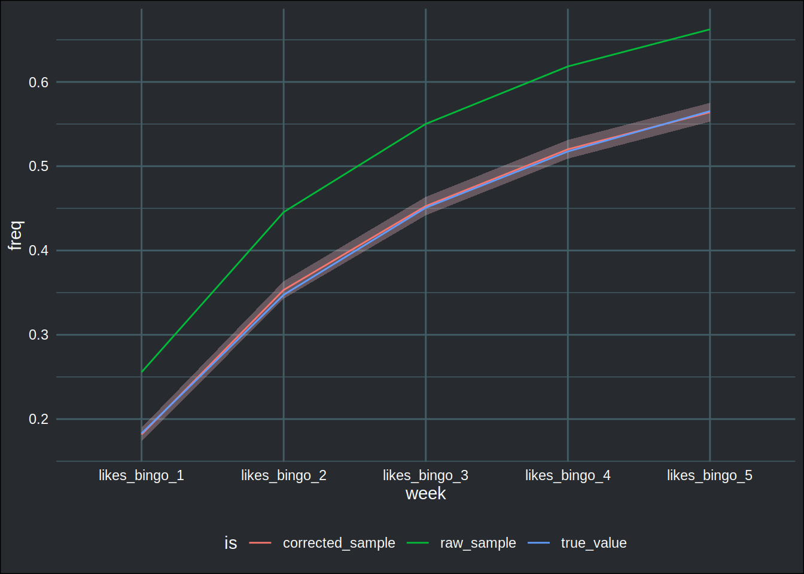

Dealing with non-representative samples with post-stratification
Let’s go back to stats 101: what do you do if you want to know how many people like to play bingo in a certain population? The answer, of course, is to ask a sample of people if they enjoy playing bingo, compute the proportion and then… we’re done! Right? Well not exactly. This works if your sample is representative, which in practice, is not often the case. I am not an expert of survey methods, very far from it, but I was recently confronted to a similar issue at work. So in this blog post I want to talk about estimating a proportion using a sample that is not representative of the population using a method called “post-stratification”.
By the way, before continuing, I also made a video about this topic if you’re interested, watch it here.
The data I use in this blog post is simulated; so I know the “truth”, since I made the data, and can thus compare the results from post-stratification to the truth. At the end of the blog post, I will post the complete source code, but for now, let’s suppose that this is my sample:
library(tidyverse)
library(survey)
library(janitor)
library(brotools)my_sample_1## # A tibble: 904 x 2
## age_group likes_bingo_1
## <chr> <dbl>
## 1 20-49 0
## 2 20-49 0
## 3 20-49 0
## 4 20-49 0
## 5 20-49 0
## 6 20-49 0
## 7 20-49 0
## 8 20-49 0
## 9 20-49 0
## 10 20-49 1
## # … with 894 more rowsLet’s suppose that we have asked people two questions: their age, and whether or not they like bingo. Using this sample, I obtain the following result:
result <- mean(my_sample_1$likes_bingo_1)So according to this sample, 38.38% of people in my population like bingo. But is that right? Let’s use the other piece of information we have: the interviewee’s ages. This is the distribution of the age group in my sample:
my_sample_1 %>%
tabyl(age_group)## age_group n percent
## 19- 40 0.04424779
## 20-49 174 0.19247788
## 50-79 540 0.59734513
## 80+ 150 0.16592920We want to compare this to the distribution of the same age groups in the population. Thankfully, this is something that is readily available in most (all?) countries. National statistical institutes publish such data on a yearly basis. This is the distribution in the population:
age_distribution_population## age_group n percent
## 19- 12825 0.21865516
## 20-49 25833 0.44043032
## 50-79 17779 0.30311658
## 80+ 2217 0.03779793As we can see, our sample is completely off! Elderly people are over-represented while younger people are under-represented. Perhaps this happened because elderly people love bingo more than younger people and, when given the opportunity to confess their love for bingo, are more willing to answer to a survey. Whatever the reason, it would be unreasonable to assume that the proportion given by our sample is a good, unbiased, estimate of the true proportion in the population.
What we would like to do here, is to compute weights for each individual in the sample, such that individuals from over-represented groups contribute less to the computation of the proportion than individuals from under-represented groups. This is where post-stratification and raking come into play. As already said, I’m not an expert of these methods. So don’t believe that this blog post is a tutorial. However, what I’m going to show you might come in handy.
We’re going to use the {survey} package to compute the weights using raking, by post-stratifying the sample on age group. This can be done with two commands:
unweighted_data <- svydesign(ids = ~1, data = my_sample_1)## Warning in svydesign.default(ids = ~1, data = my_sample_1): No weights or
## probabilities supplied, assuming equal probabilityweighted_data <- rake(design = unweighted_data,
sample.margins = list(~age_group),
population.margins = list(pop_marginal_age))
The first function, svydesign() allows you to create a new object based on your data, which specifies the design of your study. In this case, I have used ids = ~1 to say “I don’t have any weights, nor anything specific to tell you”. Next, using the rake() function, I can compute the weights. For this, I need the object I created before, the variable I want to post-stratify on, and then give a table that contains the distribution of said variable in the population. This table looks a bit different from the one I already showed you: it doesn’t contain the categories’ frequencies, and the variable containing the counts is called Freq (rake() looks for this variable so it must be named like this):
pop_marginal_age ## age_group Freq
## 1 19- 12825
## 2 20-49 25833
## 3 50-79 17779
## 4 80+ 2217We can now take a look at the weights:
summary(weights(weighted_data))## Min. 1st Qu. Median Mean 3rd Qu. Max.
## 14.78 32.92 32.92 64.88 32.92 320.62In cases where you have very high or very low weights, the literature recommends trimming them. However, I have not seen anything very definitive on this, and it seems that practitioners rely on rules of thumb and gut feeling to know when to trim weights. In my example here, I don’t think it is needed, but as I said, I have no intuition for this. Anyways, we are now ready to compute the new proportion:
svymean(~likes_bingo_1, weighted_data)## mean SE
## likes_bingo_1 0.19343 0.0121The result is quite different from before (it was 38.38% in the “raw” sample)! Because I have simulated the data, I can now compare to the “true” value:
eusilcP %>%
summarise(mean(likes_bingo_1))## mean(likes_bingo_1)
## 1 0.1830225And we’re quite close!
Now let’s continue a little bit, with a more complicated example. Imagine that I collected five samples, one per week. Each sample contains totally different people (no person gets asked twice). Also, imagine that while I’m collecting my samples and analyzing them, bingo fever is running amok in my country, always infecting more and more people. As time passes, the proportion of people who love bingo keeps increasing. So my population’s parameter keeps changing, and each week, when I get a new sample, the proportion in my sample will also grow on a weekly basis. Because of this, I have to compute weights each week. Thankfully, the distribution of age groups in my population can be assumed to stay constant, so I don’t need to think about that.
Let’s take a look at my sample which contains 5 weeks of data:
samples## # A tibble: 31,590 x 3
## age_group week yes
## <chr> <chr> <dbl>
## 1 20-49 likes_bingo_1 0
## 2 20-49 likes_bingo_2 0
## 3 20-49 likes_bingo_3 0
## 4 20-49 likes_bingo_4 0
## 5 20-49 likes_bingo_5 0
## 6 20-49 likes_bingo_1 0
## 7 20-49 likes_bingo_2 0
## 8 20-49 likes_bingo_3 0
## 9 20-49 likes_bingo_4 0
## 10 20-49 likes_bingo_5 1
## # … with 31,580 more rows
Each row is one person, and this person gets sample exactly once. The yes variable collects the answer to the question “do you like bingo?”. Let’s see how my proportion evolves through time:
(samples_likes_bingo_through_time <- samples %>%
group_by(week) %>%
summarise(freq = mean(yes)))## # A tibble: 5 x 2
## week freq
## <chr> <dbl>
## 1 likes_bingo_1 0.256
## 2 likes_bingo_2 0.446
## 3 likes_bingo_3 0.550
## 4 likes_bingo_4 0.618
## 5 likes_bingo_5 0.662We see that it keeps increasing: this is a good sign, since we know that this is also the case in the population. We just don’t know by how much. Let’s compute weights for each week, and then recompute estimated proportions using these weights. In order to do this, I will write a function that will make it easy to do just that:
compute_weekly_weights <- function(sample_df){
unweighted_data <- svydesign(ids = ~1, data = sample_df)
rake(design = unweighted_data,
sample.margins = list(~age_group),
population.margins = list(pop_marginal_age))
}
This function does the exact same thing as before. But it will now make it easy to apply to each week using the group_by-nest-map approach:
weighted_samples <- samples %>%
group_nest(week) %>%
mutate(weights = map(data, compute_weekly_weights)) %>%
mutate(svymeans = map(weights, ~svymean(~yes, .)))## Warning in svydesign.default(ids = ~1, data = sample_df): No weights or
## probabilities supplied, assuming equal probability
## Warning in svydesign.default(ids = ~1, data = sample_df): No weights or
## probabilities supplied, assuming equal probability
## Warning in svydesign.default(ids = ~1, data = sample_df): No weights or
## probabilities supplied, assuming equal probability
## Warning in svydesign.default(ids = ~1, data = sample_df): No weights or
## probabilities supplied, assuming equal probability
## Warning in svydesign.default(ids = ~1, data = sample_df): No weights or
## probabilities supplied, assuming equal probabilityLet’s take a look at this object:
weighted_samples## # A tibble: 5 x 4
## week data weights svymeans
## <chr> <list<tibble>> <list> <list>
## 1 likes_bingo_1 [6,318 × 2] <srvy.ds2> <svystat [1]>
## 2 likes_bingo_2 [6,318 × 2] <srvy.ds2> <svystat [1]>
## 3 likes_bingo_3 [6,318 × 2] <srvy.ds2> <svystat [1]>
## 4 likes_bingo_4 [6,318 × 2] <srvy.ds2> <svystat [1]>
## 5 likes_bingo_5 [6,318 × 2] <srvy.ds2> <svystat [1]>
So for each week, I have now a svydesign object and also a new, hopefully unbiased, proportion of people who like bingo. The following lines simply but this into a nice tibble:
weighted_samples <- weighted_samples %>%
mutate(svymeans = map(svymeans, as_tibble)) %>%
select(week, svymeans) %>%
unnest(cols = svymeans) %>%
rename(freq = mean,
SE = yes) %>%
mutate(is = "corrected_sample")To conclude, let’s create a plot that compares the proportions computed without using weights to the proportions computed with weights to the true values that I simulated myself. I put everything in a data frame and the create the plot:
all_data <- bind_rows(weighted_samples, # my corrected data
mutate(samples_likes_bingo_through_time, is = "raw_sample"), # the raw samples
mutate(likes_bingo_through_time, is = "true_value")) %>% # the true, simulated, values
mutate(SE = ifelse(is.na(SE), 0, SE))
ggplot(all_data) +
geom_ribbon(aes(y = freq, x = week,
ymin = freq - 2*SE,
ymax = freq + 2*SE,
group = is),
fill = "pink",
alpha = .3) +
geom_line(aes(y = freq, x = week, colour = is, group = is)) +
theme_blog()
We can see that the proportions computed without weights were clearly over-estimating the true share of bingo enthusiasts in the population. The weighted proportions are very close to the true values and are acceptable estimates of the true proportions!
If you want to take a look at the source code, go here.